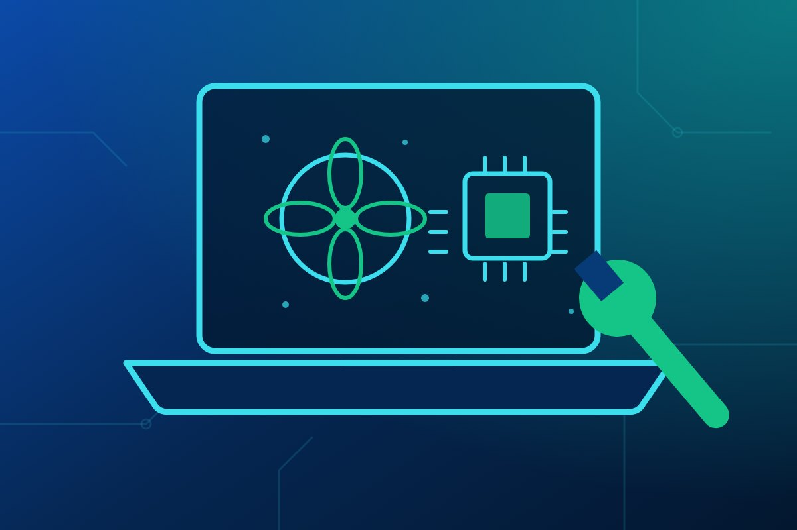

Mantenimiento preventivo
Limpieza interna y cambio de pasta térmica para que tu equipo no se caliente ni se apague solo.
Ver tarifasSomos un emprendimiento de Comas, Lima, que cuida los equipos con los que estudias y trabajas. Nuestra propuesta es simple y la cumplimos en cada servicio.
Muchas personas no saben a dónde acudir ni cuánto les costará reparar su computadora. Es común encontrar talleres sin precios claros, sin garantía formal y con poca confianza. Además, se conoce poco el mantenimiento preventivo, lo que provoca fallas, pérdida de información y gastos innecesarios.
Por eso publicamos nuestras tarifas y creamos un seguimiento en línea: así sabes en qué etapa está tu reparación sin tener que llamar.

Limpieza interna y cambio de pasta térmica para que tu equipo no se caliente ni se apague solo.
Ver tarifasInstalamos Windows, Office y los programas que necesitas para clases o trabajo.
Ver tarifasCambio de disco SSD y otras piezas, con cotización previa antes de empezar.
Ver tarifas